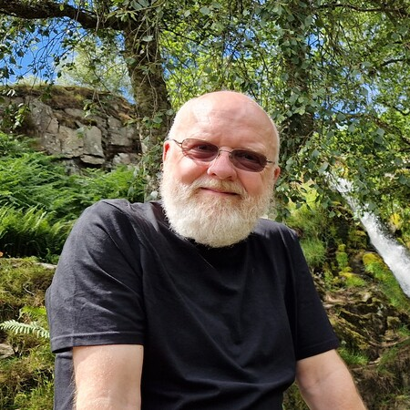

David Peebles

Professor of Cognitive Science
Lead, Cognition, Communication, and Behaviour research group
Department of Psychology
University of Huddersfield
Queensgate
Huddersfield HD1 3DH, UK
Telephone: +44 (0)1484 257458
Email: d.peebles@hud.ac.uk
Research
I am a cognitive scientist interested in the computational processes underlying human cognition. Much of my research uses computational modelling, particularly the ACT-R cognitive architecture, together with behavioural experiments to investigate memory, reasoning, and other cognitive processes. I also collaborate on research applying machine-learning and other computational methods to problems in health, particularly dementia and mental health.
Memory and cognitive architecture
My current cognitive modelling research focuses on memory within the ACT-R cognitive architecture. I am particularly interested in working-memory prioritisation and maintenance, retrieval and reactivation processes, and how processing during working-memory tasks affects subsequent long-term memory. This work forms part of a broader interest in using cognitive architectures to develop explicit process models of human cognition.
Machine learning and dementia
I collaborate on research using machine-learning methods to investigate the detection and progression of dementia. This work has examined cognitive and functional measures used in dementia assessment, methods for identifying informative predictors, and the development of classification models whose predictions can be interpreted. Current work is investigating prodromal and preclinical markers that may predict subsequent diagnosis and disease progression.
AI, digital inclusion and mental health
I am part of the Centre for Equity in Mental Health, funded through the National Institute for Health and Care Research Mental Health Research Group programme. My work is principally within Work Package 3, which examines equitable uses of big data, artificial intelligence and digital technologies for the future of mental health. Current work includes research on digital inclusion and access to technology, and on the opportunities and challenges associated with data-driven and digital mental-health services.
Previous and related research
Previous and related work has included computational models of graph comprehension and diagrammatic reasoning, spatial cognition and navigation, visual mental imagery, decision making, vigilance, learning and retention, object-location memory, and human interaction with autonomous and complex systems. A common theme across much of this work has been the development and evaluation of explicit process models of cognition, often combining behavioural experiments, eye tracking and computational modelling.